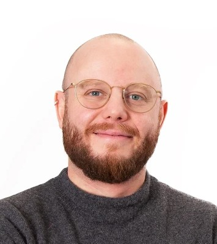

Ekin Gedik
Applied scientist — generative vision, real-time multimodal systems, production ML
I build machine learning systems that reach production. My background is a PhD in applied ML from TU Delft, where I worked on multimodal understanding of human social behaviour; since 2020 I've been the technical owner of two ML products, covering the full path from model training through GPU serving and deployment.
As Director of R&D at RealFaceValue I lead work on generative computer vision for simulating aesthetic treatment outcomes — generative face models, semantic control over their latent space, and the parsing and landmark models around them. Through my consultancy, Socolutions, I'm CTO at Attune Media Labs, where I built a real-time empathic voice companion: self-hosted quantized LLM serving, retrieval-based long-term memory, and sub-second voice orchestration.
I'm based in The Hague.
Generative modelling for faces · Real-time multimodal systems · Efficient LLM inference and serving · Affective computing in production settings
400+ citations — full list on Google Scholar
Towards Analyzing and Predicting the Experience of Live Performances with Wearable Sensing — IEEE Transactions on Affective Computing, 2018
Detecting Conversing Groups Using Social Dynamics from Wearable Acceleration — ACM IMWUT, 2018
ConfLab: A data collection concept, dataset, and benchmark for machine analysis of free-standing social interactions in the wild — NeurIPS, 2022